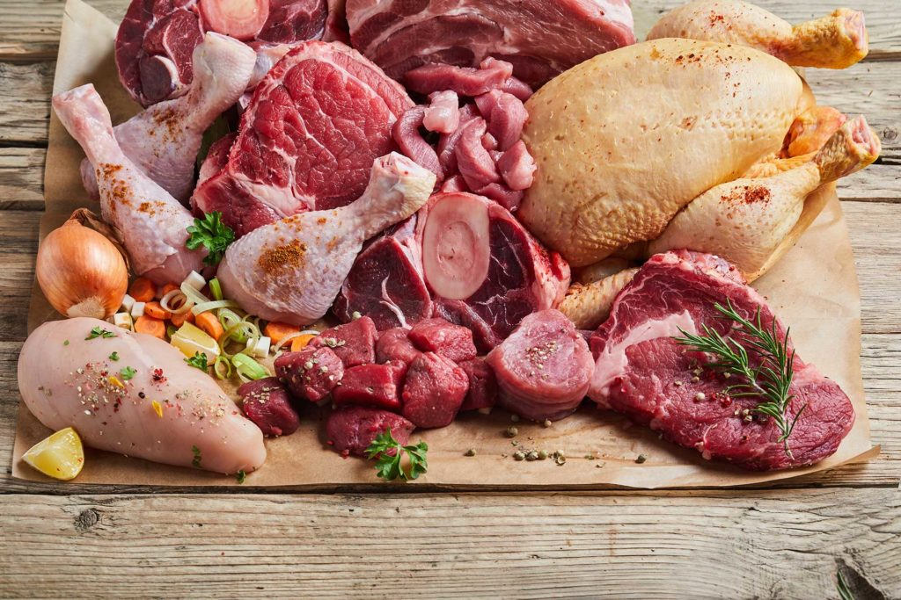

Meat

Description
Fresh Meat captures an assortment of fresh high-quality meats that are sure to elevate culinary creation.cut boasts vibrant colors the natural beauty,freshness
of the meat.these fresh meats are the perfect foundation for creating delicious and unforgettable that will impress the most discerning palates.Indulge
in the succulent flavors of this fresh meat recipe. Whether it's a tender rack of lamb, a juicy cut of steak, or a flavorful chicken breast, this recipe will leave
your taste buds craving for more. Each recipe showcases the natural quality of the meat, enhanced with a perfect blend of herbs, spices, and marinades.
From the herb-roasted rack of lamb to the perfectly grilled steak and the zesty lemon herb chicken breast,these recipes are a delightful
combination of flavors and textures.Get ready to savor the juiciness and tenderness of these fresh meat dishes, perfect for any occasion.
Ingredients
- Fresh beef steaks
- Tender lamb chops
- Succulent pork ribs
- Flavorful chicken breasts
- Juicy ground beef
- Seasonings and marinades of choice
Steps
- Preheat the grill or oven to the desired temperature.
- Prepare the meat by seasoning it with your choice of spices, marinades. Let it sit for a while to absorb the flavors.
- Grill or roast the meats according to their recommended cooking times and temperatures Adjust the cooking time based on your preferred level of doneness.
- Monitor the meat's internal temperature using a meat thermometer to ensure it reaches the desired level of doneness.
- Once cooked, remove the meat from the grill or oven let it rest for a few minutes to allow the juices to redistribute.
- Once cooked, remove the meat from the grill or oven and let it rest for a few minutes to allow the juices to redistribute.
- Serve the freshly cooked meats as the centerpiece of a delicious meal.Pair them with your favorite sides and sauces for a complete dining experience.
Regenerate response